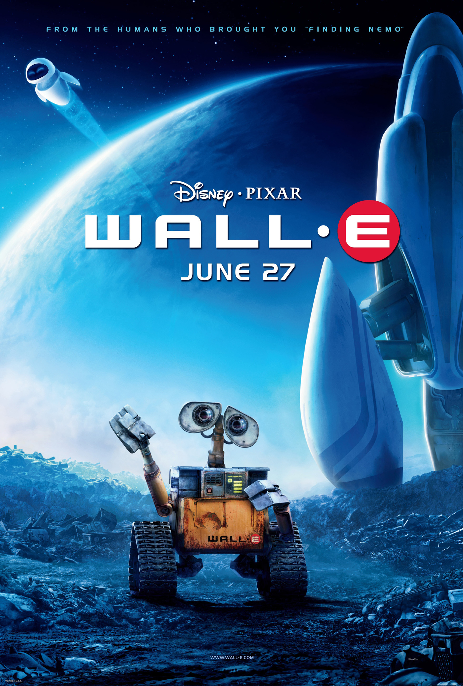

Wall-E
Walt Disney Studios Motion Pictures | Release date: Jun 27,2008

Metascore
Universal acclaim
based on 39 critics
- Starring: Ben Burtt, Elissa Knight, Jeff Garlin
- Sumary: WALL-E, short for Waste Allocation Load Lifter Earth-class, is the last robot left on Earth.
He spends his days tidying up the planet, one piece of garbage at a time. But during 700 years,
WALL-E has developed a personality, and he's more than a little lonely. Then he spots EVE (Elissa
Knight), a sleek and shapely probe sent back to Earth on a scanning mission. Smitten WALL-E embarks
on his greatest adventure yet when he follows EVE across the galaxy.